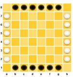
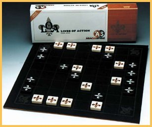

|
|
Here is a typical board position, with the legal moves for one of the black stones marked. If you are using a Java enabled browser, this diagram is a real board! You can click on any piece to see its legal moves. Click at the end of any move arrow to move there. |
the "fine print" rules
|
| Here is a typical finished game, where black has just won the game: |
| A full play-by-web implementation of LOA is available at Little Golem, along with many other fine games. |  |
| Play by Email is not as clunky as it sounds. The server maintains the state of the game, a ratings system and so on. Each message during a game includes an ascii picture of the game state. You can (of course) use a real board or one of the LOA programs to provide a better view. Also, a graphic for games in progress can viewed at this site and once you locate your game, it can be bookmarked. |
|
A public game database at Accessdenied.net keeps track of players who are actually interested in playing LOA, and many other games. The database is rather sparse now, so register, to fatten it up.
Every October, there is a tournament is played using the server. For results of the previous and current tournaments, consult the tournaments page.
Method #4 is to play a human or computer opponent, on line.
As of May 2004, Lines of Action is online here at BoardSpace.net.
It's
been
my plan all along, really. The online version is
based on the same java applet as the rest of the LOA web site, but
with
upgraded graphics, and live opponents.
I believe this this version is much more satisfactory than the
version
at L udoTeka,
which
was
nice in principle, but never really satisfactory as a site for
serious
games.
However, Philip Cohen reports owning an actual boxed board, published by a German company called "Hexgames".
On the other hand, my few encounters with "Hexagames" while researching LOA suggested that it is now out of business, so perhaps my "not commercially viable" comment is valid after all. Helmut Wresnik reports that the "Hexagames" version is still available from a successor company called "Abacus".

I have before me a wooden box containing Lines of Action, (c) Hexagames 1987 (a West German game company). Soucie's name is on the front of the Spielanleitung/Game Instructions/Regles de Jeu sheet. There's a rolled-up cloth board and twelve square wooden pieces, brown with beige fleurs-de-lis on them or beige with brown fleurs-de-lis. The advantage over checker pieces is that you can play four-handed or ambidextrous LOA with them by orienting the fleurs-de-lis differently on the four sides
AbacusspieleI bet they have other interesting games for sale too!
D-63303 Dreieich
Schopenhauerstr. 41
T.: 06103 36626
Fax.: 06103 65273
Since its invention and up to now, Lines of Action has led a nomadic existence on the fringes of gamers' society. I was introduced to the game by my friend Dave Poole, who said it was "from Stanford", but otherwise had no idea where it came from. This kind of irregular introduction seems to be pretty much the norm. For example, Don Woods wrote:
I don't know, but I do remember that John Gilbert, David Wall, et al. had encountered the game prior to coming to Stanford. (They called it "John's Sister's Game", because they'd heard about it from John's sister and didn't know the actual name.)and David Wall wrote:
John's sister, Jean Gilbert, introduced it to us; I have the vague idea she learned about it at university, though whether that was the University of New Mexico where we were all undergraduates or UC Santa Cruz where she got a masters, I don't recall.And the meme continues: just recently , Hwei Yin posted to rec.games.abstract
Hey There Guys (and Gals)! I have a game for you to try! I don't think this game has a title, but it appears to be non-trivial. I saw it in an ancient issue of Science (Mathematical Games). We've been having a blast playing it. It requires a checker board and checkers.The game, of course, is LOA. This kind of life-of-its-own is the hallmark of a truly great game. It doesn't require hype or commercial motives to keep it going, it just lives.
| E-Mail: | Go to BoardSpace.net home page |